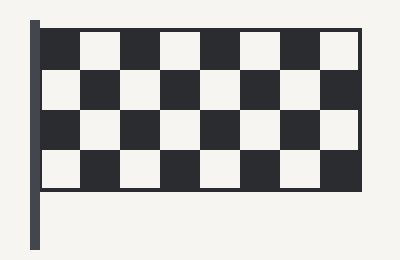

Benvenuto nel mio sito sul motorsport
Ho fatto questo sito per raccogliere un po' di cose che mi piacciono delle corse: come è nata la Formula 1, come sono cambiate le macchine e quali sono i circuiti che tutti conoscono, anche chi non guarda mai una gara.


Cosa trovi qui
Il sito ha due pagine oltre a questa. Puoi partire da quella che ti incuriosisce di più.
Un po' di storia
Dal primo campionato del 1950 fino alle monoposto ibride di oggi.
I circuiti
Monza, Monaco, Spa e Suzuka: quattro piste, quattro caratteri diversi.